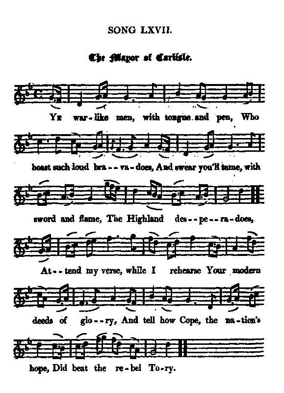
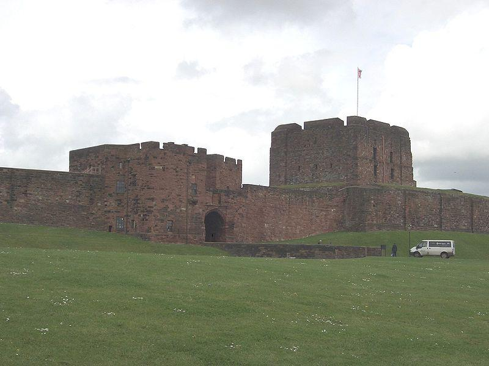

The Mayor of Carlisle
Le maire de Carlisle
Carlisle's surrender on 15th November 1745
from "a MS copy, as dictated to the editor by a young gentleman who had it from his grandfather",published by J.Ritson in his "Scotish Songs", vol II, p.90 (class III N°23), 1794
Tune - Mélodie
"Katherine Ogie"
from Hogg's "Jacobite Relics" 2nd Series N°67 page 134, 1821
Sequenced by Christian Souchon

|
To the tune:
Joseph Ritson who first published the song in his "Scotish (sic) Songs" in 1794 titles the tune "Katherine Ogie". The version you are listening to was contributed to James Hogg by Mr Moir, with lyrics hardly different. This air is credited to the Irish haper Rory Dall (=blind) O'Cahan (c.1601 - c.1650) by the Irish antiquarian, W.H. Grattan Flood (1859 - 1928). - But it appears earliest in the Scottish Panmure Manuscript #9454, c. 1675, "Seventy Seven Dances, Songs and Scots Airs for the Violin", and - in the Guthrie Manuscript (c. 1675). - It was printed under this title in the Appendix (written in 1688) to Playford's Dancing Master of 1686, -and a year earlier, by the same Playford, in "Apollo's Banquet" (5th edition, 1687) where it is called a "Scotch Tune". Later versions appear in many other collections. Lady Catherine Ogie was a real personage, born around 1570 and was the daughter of Cuthbert Ogie, 7th Lord Ogie, in Northumberland. In 1591 she married Sir Charles Cavendish of Stoke. They were immensely rich... Source "The Fiddler's Companion" (cf. Liens). The text of the original song reads thus: "As walking forth to view the plain Upon a morning early, While May's sweet scent did clear my brain, From flow'rs with grey so rarely: I chanced to meet a pretty maid She shin'd though it was foggy: I ask'd her name: Sweet Sir, she said My name is Katharine Ogie..." from Herd's "Ancient and Modern Scottish Songs", 1769 or 1776. |
A propos de la mélodie:
Joseph Ritson qui, le premier publia ce chant dans ses "Scotish (sic) Songs" de 1794, indique que l'air sur lequel on le chante est "Katherine Ogie". La version que vous entendez est celle que M.Moir envoya à James Hogg, avec un texte à peine différent. L'air est attribué au harpiste irlandais Rory Dall (=aveugle) O'Cahan (c.1601 - c.1650) par le musicologue W.H. Grattan Flood (1859 - 1928). - Mais la première publication qui en fut faite fut dans le Scottish Panmure Manuscrit" #9454, vers 1675, dans "77 danses, chants et airs écossais pour le violon" et dans -le manuscrit Guthrie (vers 1675). - Le morceau fut imprimé sous ce titre dans l'Annexe (rédigée en 1688) au "Maître de Danse" de Playford, de 1686, - et, un an plus tôt, par le même Playford, dans son "Banquet d'Apollon" (5ème édition, 1687), où il est intitulé "Air écossais". Des versions plus tardives figurent dans de nombreux autres recueils. Lady Catherine Ogie a vraiment existé. Née vers 1750, elle était la fille de Cuthbert Ogie, 7ème Lord Ogie en Northumberland. En 1591, elle épousa Sir Charles Cavendish de Stoke. Ils étaient très riches... Source "The Fiddler's Companion" (cf. Liens). Le texte du chant d'origine était: "J'étais, je m'en souviens, par un beau matin, Sorti sur le mont pour voir la plaine, Les senteurs du printemps venaient réjouir mes sens, De toutes les fleurs, des parfums à perdre haleine, Quand je vis venir vers moi ce ravissant minois Dont l'éclat me parvenait dans la brume. Je demandai son nom: Oh, Monsieur est trop bon. C'est Catherine Ogie que je me nomme. des "Ancient and Modern Scottish Songs" de D.Herd, volume I, 1769 or 1776. |

|
THE MAYOR OF CARLISLE
1. Ye warlike men, with tongue and pen, Who boast such loud bravadoes, And swear you'll tame, with sword and flame The Highland desperadoes, Attend my verse, whilst I rehearse Your modern deeds of glory, And tell how Cope, the nation's hope, Did beat the rebel Tory. 2. With sword and targe, in dreadful rage, The mountain squires descended; They cut and hack, alack ! alack ! The battle soon was ended: And happy he who first could flee; Both soldiers and commanders Swore, in a fright, they'd rather fight In Germany or Flanders. 3. Some lost their wits, some fell in fits, Some stuck in bogs and ditches ; Sir John, aghast, like lightning past, Discharging in his breeches. The blue-cap lads, with belted plaids, Syne scamper'd o'er the Border, And bold Carlisle, in humble style, Obey'd their leader's order. 4. O Pattison! ochon! ochon! Thou figure of a mayor! Thou bless't thy lot thou wert no Scot, And bluster'd like a player. What hast thou done with sword or gun To baffle the Pretender? Of mouldy cheese and bacon grease, Thou much more fit defender! 5. O front of brass and brain of ass With heart of hare compounded! How are thy boasts repaid with costs, And all thy pride confounded! Thou need'st not rave, lest Scotland crave Thy kindred or thy favour ; Thy wretched race can give no grace, No glory thy behaviour. Source: "Scotish Songs" Volume II by Joseph Ritson (London 1794), N° 23, page 90. |
 Carlisle Castle. |
LE MAIRE DE CARLISLE
1. A plus d'un matamore, Habile à manier La langue, la plume et la bravade, Lequel hier encore Jurait qu'il materait Par le fer et le feu toutes nos incartades, Je dédie ces quelques vers. Et voilà qu'à travers Mon esprit, vos récents hauts faits repassent. Je dirai comment Cope, Terrifiant lycanthrope, Conjura des traitres tories la menace. 2. Avec l'épée, l'écu, Nous voilà descendus, De nos monts tout écumants de rage. Et d'estoc et de taille, Quelle belle bataille! En un rien de temps nous avions fait carnage. Et ce fut le sauf qui peut: Furent les plus chanceux Ceux qui d'abord ont pu prendre la fuite. Soldats et commandants Juraient tous en tremblant Qu'ils préféraient l'adversaire germanique! 3. Celui-ci perd l'esprit; Celui-là s'évanouit. Et d'autres dans les fossés s'enlisent Et Sir John Cope, hagard, Plus vif que l'éclair, part Et sa culotte d'étranges couleurs s'irise. Et les gars aux bleus bonnets Ceinturés de leurs plaids, Depuis lors ont dépassé la Frontière. A Carlisle à présent D'obéir humblement Aux ordres de ce courageux condottiere! 4. O Thomas Pattison, Entends, le glas sonne! Vit-on jamais maire plus étrange? Tu t'es réjoui trop tôt De ne pas être Scot, Tes pronostics voilà que le sort les dérange. Quelle mouche t'a piqué De vouloir affronter Par le fer et le feu notre Alexandre? La graisse de bacon Et le lait moisi sont, Plus qu'une ville, des biens que tu sais défendre! 5. Cet homme au front d'airain, Au cerveau mal en point, Par son courage est parent du lièvre: Ses propos outranciers, Avec les intérêts, Devront repasser la barrière de ses lèvres! Ne vas point imaginer Que c'est les Ecossais Qui rêvent d'appartenir à ta race. Si tous sont comme toi, Cette race, crois-moi Se signale par la honte et la disgrâce! (Trad. Christian Souchon(c)2010) |
|
Charles Edward Stuart captured the city of Carlisle and Carlisle Castle on 14th - 15th November 1745.
He had received intelligence that the General Wade was advancing with British forces from Newcastle to relieve Carlisle and that he had already arrived in Hexham, so he decided to leave a sufficient force to blockade the town and to attack Wade on hilly grounds between Newcastle and Carlisle with the remainder of his army. He departed on the morning of the 11th of November 1745. Charles waited at Brampton for two days without hearing anything of Wade. A council of war was then held. Following George Murray's advice, it was decided that half of the Jacobite force should stay at Brampton while the other half, led by Murray for the siege and the Duke of Perth for the attack of the town, besieged Carlisle. On the 13th November at about noon, they appeared before Carlisle. Men were posted in the villages around the city. The attack begun in the evening when the besieging party broke ground before the city walls. The city's garrison constantly fired upon them in the night without success. The Jacobites soon brought up their cannon which consisted of six pieces brought from France by Marquis d'Eguilles. The following morning the defenders continued their fire with as little effect as before. A meeting of the English inhabitants of the town was held and it was decided to surrender. A white flag was exhibited from the walls and a messenger was despatched. Prince Charles refused to grant any terms to the city unless Carlisle Castle was surrendered as well. The commander of the castle, agreed to surrender the fortress along with the town. The conditions were, that the properties of the inhabitants and the privileges of the town, should be preserved inviolate and that all the arms and ammunition in the castle and the city, and all the horses belonging to the militia, should be delivered up to the prince. This capitulation was signed on the night of the 14th of November 1745. The next morning, the Duke of Perth entered the city with his regiments. Carlisle Castle however was not given up until the next morning. The garrison were offered a large bounty to enlist in the service of the prince. The mayor, whose name, Thomas Pattison, is mentioned in the song and his attendants went to Brampton, and delivered the keys of the city to the prince. The Duke of Perth found 1,000 stand of arms in the castle. He also found 200 good horses in the city, and a large quantity of valuable effects in the castle, which had been lodged there by the gentry of the neighbourhood for safety. On the day following the surrender, the Chevalier de St. George was proclaimed in the city with the usual formalities; and, to give greater éclat to the ceremony, the mayor and aldermen were compelled to attend with the sword and mace carried before them. During the retreat of Charles Edward Stuart's Jacobites in 1746 he ordered that a regiment be left to garrison Carlisle so that he "continued to hold at least one town in England". The Hanoverian army under Cumberland then besieged and took Carlisle. Today Carlisle still houses The King's Own Royal Border Regiment! Source: Wikipedia |
Charles Edouard Stuart prit la ville et la forteresse de Carlisle les 14 et 15 novembre 1745.
Il avait appris par le renseignement que le général Wade venait de Newcastle avec une armée anglaise pour soutenir Carlisle et qu'il était déjà arrivé à Hexam. Il décida donc de laisser une force suffisant pour faire le blocus de la ville et d'attaquer Wade dans les collines entre Newcastle et Carlisle avec le reste de son armée. Il se mit en route le matin du 11 novembre 1745. Charles resta 2 jours à Brampton sans avoir d'autres nouvelles de Wade. Puis on tint conseil. Suivant en cela l'avis de Lord George Murray, on décida que la moitié des forces Jacobites resterait à Bampton, tandis que l'autre moitié, conduite par Murray pour le siège et le Duc de Perth pour l'attaque de la ville, assiègerait Carlisle. Le 13 novembre vers midi, ils se présentèrent devant Carlisle. Des hommes furent postés dans tous les villages autours de la ville. L'attaque commença dans la soirée, lorsqu'on commença à creuser des tranchées devant les murs de la cité, tandis que la garnison faisait feu dans l'obscurité sur les assiégeants sans grand succès. Les Jacobites mirent en place leur artillerie composée de 6 canons amenés de France par le Marquis d'Eguilles. Le lendemain les défenseurs continuèrent de tirer sans plus de succès qu'auparavant. On organisa une réunion des habitants où il fut décidé qu'on se rendrait. On hissa le drapeau blanc et on envoya un parlementaire. Le Prince exigea que le château se rendît avec la ville, condition que le commandant du château accepta. Il fut convenu que les biens des habitants et les privilèges de la ville seraient laissés intacts et que les armes et munitions du château et de la ville, ainsi que les chevaux de la milice seraient remis au Prince. L'acte de capitulation fut signé dans la nuit du 14 novembre 1745. Le lendemain matin, le Duc de Perth entra dans la ville avec ses régiments. Le château de Carlisle ne se rendit que le matin suivant. La garnison se vit offrir une prime royale pour s'enrôler au service du Prince. Le Maire, dont le chant nous apprend le nom, Thomas Pattison, et ses adjoints se rendirent à Brampton et remirent au Prince les clés de la cité. Le duc de Perth trouva 1000 mousquets avec munitions dans le château et 200 bons chevaux dans la ville. Il trouva aussi une grande quantité d'effets qui avait été mis à l'abri au château par la noblesse locale. Le jour suivant la reddition, le Chevalier de Saint-Georges fut proclamé dans la cité suivant le cérémonial habituel, rehaussé par la présence du Maire et ses adjoints précédés du glaive et de la masse d'armes. Pendant la retraite de l'armée de Charles Edouard en 1746, il ordonna qu'un régiment soit laissé en garnison à Carlisle afin de "continuer à tenir au moins une ville anglaise". L'armée hanovrienne de Cumberland assiégea puis reprit Carlisle. Aujourd'hui il y a encore un régiment, le "King's Own Royal Border" en garnison à Carlisle! Source: Wikipedia |
|
|
|